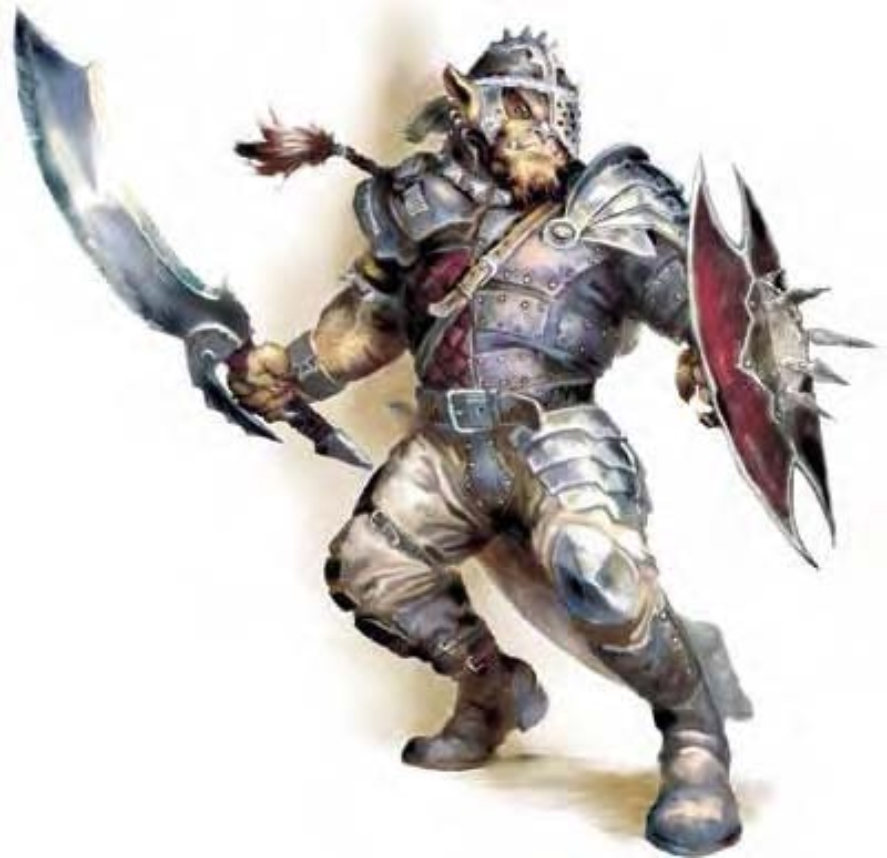

| 资料栏位 | 大地精、1级武者 中型人形怪物 (类地精) |
| 生命骰 | 1d8+2 (6HP) |
| 先攻 | +1 |
| 速度 | 30英尺 (6格) |
| 防御等级 | 15 (+1敏捷、+3镶嵌皮甲、+1轻型盾)、接触11、措手不及14 |
| 基本攻击/擒抱 | +1 / +2 |
| 攻击 | 长剑+2近战 (1d8+1 / 19-20)；或标枪+2远程 (1d6+1) |
| 全力攻击 | 长剑+2近战 (1d8+1 / 19-20)；或标枪+2远程 (1d6+1) |
| 占据/触及 | 5英尺 / 5英尺 |
| 特殊攻击 | ― |
| 特殊能力 | 黑暗视觉60英尺 |
| 豁免 | 强韧+4、反射+1、意志-1 |
| 属性 | 力量13、敏捷13、体质14、智力10、感知9、魅力8 |
| 技能 | 躲藏+3、聆听+2、潜行+3、侦察+2 |
| 专长 | 警觉 |
| 环境 | 热暖带丘陵 |
| 组织 | 成队 (4-9)、一团 (10-100，加上50%非战斗人员、每20个成年大地精1个3级军士、1个4-6级干部)、战团 (10-24) 或一族 (30-300，加上50%非战斗人员、每20个成年大地精1个3级军士、1-2个4-5级校尉、1个6-8级干部、2-4只凶暴狼、1-4个兽人或1-2个巨魔) |
| 挑战级数 | 1/2 |
| 宝藏 | 标准 |
| 阵营 | 通常守序邪恶 |
| 进化 | 视人物职业而定 |
| 等级修正值 | +1 |
这个魁梧的人形生物身高约6.5英尺，有着多毛的皮肤、野兽般的眼睛、扁平的鼻子与下巴。
大地精是地精的远亲，身材较大，也比地精更凶猛且更有组织。大地精与其他人形生物间（特别是精灵）存在着永无止尽的战争。
大地精的毛色从深红棕到黑灰色，肤色则为深橘或橘红色。大型雄性有着蓝色或红色的鼻子。大地精的眼睛为黄色或深棕色，牙齿也是黄色的。他们偏好穿着颜色鲜艳的服饰，常穿着血红色服饰配上黑色皮革，武器都打磨光亮且保养良好。
大地精通晓地精语与通用语。
在家乡之外出没的大地精多为武者，数据域位中为1级武者的范例。
战斗这些生物不但能理解策略与战术，也能实行复杂的战争计划。在高明军事家或谋士的领导下，大地精的纪律是决定成败的因素。大地精痛恨精灵，比起其他敌人他们会优先攻击精灵。
技能：大地精在进行“潜行”检定时具有+4种族加值。
此处列出的大地精武者在计算种族修正值前，具有下列属性：力量13、敏捷11、体质12、智力10、感知9、魅力8。
大地精是军人般的种族：他们为战争而生，深信强大的力量与勇健的体魄对于个体或领导人而言都是最重要的条件。他们的领导者常是团体中最大只或最强壮的个体，以严格的纪律维持权力。大地精常担任地精或兽人部落的领导者，但会轻视他们且将之视为次等种族。大地精佣兵有时会受雇于有钱的邪恶人形生物。
大地精社群通常为一族或一团，各族各团间互相忌妒彼此的声誉与地位。遭遇敌团时若无领导人制止成员，常会爆发武力冲突。只有非常强大的领导者可以强迫各团彼此合作一段时间。各团在战斗时都会携带独特的军旗，可用来鼓舞士气、召集团员或对团员发出信号。大地精队或战团中几乎全为男性。一团与一族则包含女性可协助防御。非战斗人员则为无法战斗的大地精幼童。
这些生物大多在拥有天然防御或可构筑防御的地方落脚。他们最中意的地点包括山洞、地城、废墟与森林。常见的防御设施则为壕沟、栅栏、闸门、哨塔、陷坑陷阱与粗陋的投石机或弩炮。
大部分的大地精崇敬地精的守护神，魔古比耶。
大地精的人物大地精领导者多为战士或战士兼游荡者。大地精牧师信仰魔古比耶，可由下列领域择二：邪恶、破坏或诡术。大部分的大地精施法者职业为导师，他们偏好使用可以造成伤害的法术。
大地精人物具有下列种族特性：
― +2敏捷、+2体质。
― 大地精的基本行走速度为30英尺。
― 黑暗视觉可达60英尺。
― 进行“潜行”检定时具有+4种族加值。
― 母语：通用语、地精语。额外语言：龙语、矮人语、炼狱语、巨人语、兽人语。
― 适合职业：战士。
― 等级修正值：+1